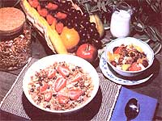

Here's a blockbuster weapon you can use in the fight against overprocessed foods:
Diane Huneke
I don't mean to brag, but I've converted a family of devoted sugar-frosted-cereal eaters into devout granola lovers with my own homemade version of "a good way to start the day". I must admit, though, that I spent quite a bit of time throwing together mediocre batches of the breakfast food before I finally hit on what 1 believe to be a great combination of ingredients (including unrefined peanut oil for an especially nutty flavor ...molasses and honey for added body ...and a goodly dose of energy-giving nuts, seeds, and dried fruit).
One of the basic secrets of making tasty granola is mixing the ingredients well, so when you set out to try this recipe-conduct the operation in a very large bowl or pan ...or, lacking that, in your (clean and wiped!) kitchen sink. Also, it's best to combine the wet and dry ingredients separately before stirring them together thoroughly.
First, blend 6 cups of old-fashioned (not quick-cooking) oat flakes, 2 cups of roasted soy splits, 2 cups of raw sunflower seeds (use 4 cups of the seeds if soy splits aren't available), 2 cups of wheat germ, 1 cup of bran, 1-1/2 cups of milk powder, 2 teaspoons of sea salt, and 3 tablespoons of cinnamon.
Then, in a separate bowl, blend 3/4 cup of molasses, 1/2 cup of honey, 1 cup of unrefined peanut oil, and 3 tablespoons of vanilla extract.
Now, combine the two mixtures well ...spread the granola on large, flat pans ...and bake it in a 250°F oven (a higher temperature will scorch the outside of the cereal before its inside is done), stirring occasionally until it turns just barely brown. At that point, dump the toasted treat out onto your clean-paper-covered kitchen table and add 2 cups each of coconut, raw cashew pieces, and raisins or diced dates. While the healthful fare is still warm, put it into tightly sealed containers, where it'll keep for ages (though the food is much too delicious to hang around your house for very long). You'll find this comestible a great morning cereal ...a perfect snack ...and an excellent topping for fruit salad, ice cream, or apple crisp!
EDITOR'S NOTE: You can use this recipe as a line trail food.. and more of such carry along edibles are described in "Pioneer Pocket Food" on page 132.
|
 |
|
|